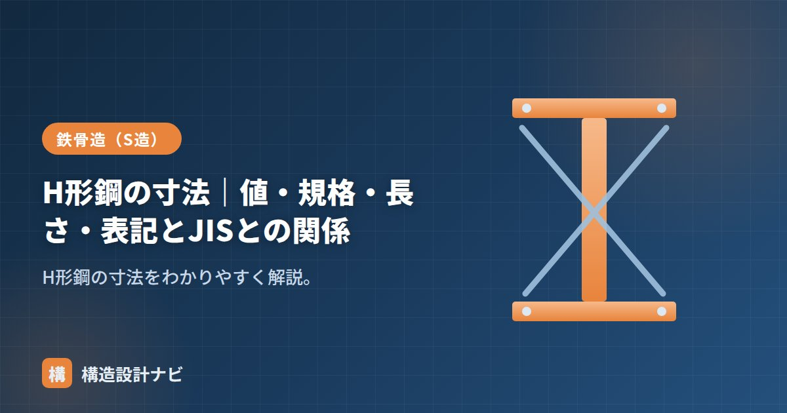

H形鋼の寸法｜値・規格・長さ・表記とJISとの関係

H形鋼の寸法とは、断面の大きさを表す「せい・幅・ウェブ厚・フランジ厚」の4つの値と、部材の長さのことです。図面や積算書では「H-400×200×8×13」のような表記で示され、この数字の意味を正しく読めることが鉄骨造（S造）を扱ううえでの第一歩になります。ここでは寸法の値・規格・長さ・表記の方法と、JIS（日本産業規格）との関係を、構造設計の実務の視点から整理します。
- H形鋼の断面寸法は「せいH・幅B・ウェブ厚t1・フランジ厚t2」の4つの値で決まる。
- 形状・寸法・質量・許容差はJIS G 3192で規定され、定尺長さは6m・12mが基本。
- 呼称寸法と実寸法が異なる系列があるため、納まり検討では形鋼表の実寸法を確認する。
寸法の値（4つの数字）
H形鋼の断面寸法は、次の4つで表されます。
| 記号 | 意味 |
|---|---|
| H（せい） | 断面の高さ |
| B（フランジ幅） | 上下の板の幅 |
| t1（ウェブ厚） | 垂直な板の厚さ |
| t2（フランジ厚） | 上下の板の厚さ |
せいHが大きいほど曲げに強くなり、フランジ幅Bと板厚が大きいほど断面積が増えて強度・剛性が上がります。どの寸法がどの性能に効くのかを意識すると、断面選定の考え方が理解しやすくなります。上下の水平な板がフランジ、それをつなぐ垂直な板がウェブで、曲げは主にフランジ、せん断は主にウェブが負担します。
規格（JIS G 3192）
H形鋼の形状・寸法・質量・許容差はJIS G 3192（熱間圧延形鋼）で定められています。せい100mm程度の小型から、せい900mmクラスの大型まで多くの呼称が規格化されています。また、せいと幅の比率によって広幅（H≒B）・中幅（H≒1.5B〜2B）・細幅（H≒2B〜3B）の系列に分かれ、柱には広幅、梁には中幅・細幅が使われるのが一般的です。なお、鋼材そのものの材質（SS400やSN400Bなど）は寸法規格とは別のJISで規定されており、「寸法の規格」と「材質の規格」は分けて考える点に注意しましょう。
長さ（定尺）
H形鋼の長さは、流通している標準的な長さ＝定尺（ていじゃく）があり、一般に6m・12mが基本です。サイズやメーカーにより、さらに長い長さも生産されます。設計長さに合わせて、定尺から切断（加工）して使います。実務では、梁の長さが定尺を超える場合は継手（ジョイント）を設けて接合し、逆に半端な長さで切ると端材（ロス）が出るため、積算では歩留まりを考えて材料取りを検討します。
寸法表記の方法
「H−せい×幅×ウェブ厚×フランジ厚」の順です（→読み方の詳細）。単位はすべてmmで、口頭では「エッチ400（ヨンヒャク）の200（ニヒャク）」のように、せいと幅だけで呼ぶことも多くあります。板厚は「薄い方がウェブ、厚い方がフランジ」の順と覚えると混同しません。
JISとの関係：呼称寸法と許容差
JISでは呼称寸法と、製造上のばらつきを認める許容差が定められています。一部の系列では呼称と実寸法が異なる（例：呼称300×150の実せい298mm）ため、納まりや製作では形鋼表の実寸法・許容差を確認します。
圧延でつくる以上、寸法をぴったりに揃えることはできないため、JISは「この範囲に収まっていれば合格」という許容差を定めています。数mmの違いでも、仕上げ材との取り合いやボルト孔の位置に影響することがあるので、詳細図の検討では呼称寸法ではなく実寸法を用いるのが実務の基本です。
よくある質問
Q1. H-400×200×8×13の重さはどのくらいですか？
単位質量は約66kg/m（形鋼表の値）です。長さ10mなら約660kgになります。単位質量は断面積×鋼の密度（7,850kg/m³）から計算でき、詳しくは「H形鋼の重量計算」で解説しています。
Q2. 呼称寸法と実寸法はなぜ違うのですか？
圧延ロールの構成上、同じ系列で板厚を変えて生産するため、板厚が変わるとせいの実寸法がわずかに変わる呼称があるからです。JISの寸法表には実寸法が記載されているので、納まり検討ではそちらを使います。
Q3. 12mを超える梁はどうしますか？
工場または現場で継手を設けて接合します。また、規格にない大きな断面が必要な場合は、鋼板を溶接して組み立てるビルドH鋼を用います。
表記は「H形鋼の読み方」、性能値は「断面性能・単位重量一覧」、系列は「広幅・中幅・細幅」をどうぞ。
材料手配の打ち合わせで意外と見落とされるのは、定尺長さと梁のスパンの関係です。12mを超える梁を1本ものと思い込んで発注すると、実際には継手が必要になり、接合部の検討や工期にも影響が出ることがあります。
まとめ
- H形鋼の寸法はせい・幅・ウェブ厚・フランジ厚と長さで決まる。
- 規格はJIS G 3192。定尺は6m・12mが基本。
- 表記は「H−せい×幅×ウェブ厚×フランジ厚」の順（単位mm）。
- 呼称寸法と実寸法・許容差はJISで規定。実寸は形鋼表で確認する。